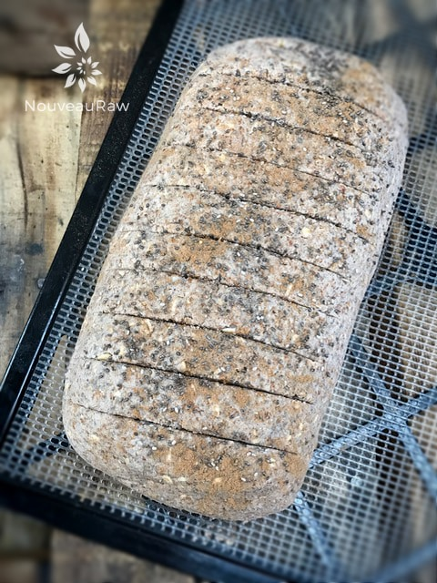
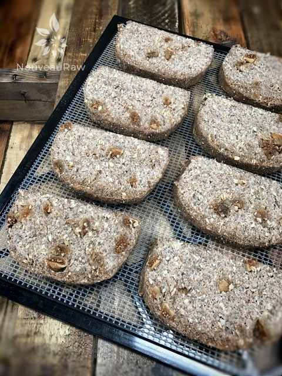

Multi-seed Fig Bread with Coconut Fig Spread

~ raw, vegan, gluten-free ~
Multi-seed Fig Bread is a soft, seedy, raw, gluten-free bread with sweet, chewy pockets of dried figs. This bread isn’t overly sweet; instead, it has just the right amount to give your morning breakfast that indulgent feeling without the guilt.
Sweet pockets of dried Figs!
Dried figs offer an incredibly pleasant flavor that is somewhere between a raisin and a date (just not as sweet). They have creamy flesh with little seeds but still creamy, sweet, and indulgent that you won’t get elsewhere.
If you are a fan of dried figs, you can replace dates with them with good reason, other than taste. Figs are lower in sugar than dates for starters. Dried figs contain up to 10 grams less than dates per weight. Plus, they have almost twice as much fiber.
Let’s chat about the ingredients briefly.
The base ingredient of this bread, and for many of my other bread recipes, is almond pulp. I tend to talk about it in each recipe just in case this is your first experience making raw bread. So for you veterans, you can opt-out of this next paragraph and jump straight to the recipe. Almond pulp is simply the by-product of making almond milk. See the link below on how to make nut milk.
I use it in my raw breads because it lends the perfect texture for bread enjoyment. I don’t recommend replacing it with other ingredients, but it can be done. You won’t achieve the same flavor and texture that I have created here.
Another vital ingredient in this bread that backs up the lightness of the almond pulp is the use of psyllium husk powder. I have made bread without it, but it tends to be more crumbly, so I use it in most of my bread recipes. Although the texture is significant, when it boils down, it is all about the taste! I love figs, but if you are not a fig lover, you could always substitute with just about any other dried fruit such as dates, raisins, or prunes. Be prepared for this bread to disappear quickly. :) Be sure to comment below. Blessings, amie sue
Ingredients:
Makes 1 loaf
Dry Ingredients:
Wet Ingredients:
- 4 cups (638 g) packed, moist almond pulp
- 1 3/4 (410 g) cups water
- 1 cup (135 g) diced dried figs
- 3 Tbsp (52 g) maple syrup
- 3 Tbsp (32 g) melted coconut oil
- 1 tsp (5 g) liquid stevia
Fig spread; yields 3/4 cup
Preparation:
Bread:
- In a food processor, fitted with the “S” blade, combine the: oats, sunflower seeds, pumpkin seeds, chia seeds, psyllium salt, and cinnamon. Process until the oats and seeds break down to a small crumble. Set aside.
- In a medium-sized mixing bowl, combine; almond pulp, water, diced dried figs, maple syrup, coconut oil, and stevia.
- I use my hands to mix this batter to make sure everything gets well coated.
- Soak dried figs for 15-30 minutes before use, so they’ll plump up nicely.
- Add the dry ingredients from the food processor and dive in with your hands and work the ingredients together.
- If the dough has a lot of cracks in it as you mold it together, you need to add a little bit more water. The flax is soaking up all the liquid.
- Place the dough on the non-stick sheet that comes with the dehydrator and shape it into a loaf. Create any size that you want.
- Transfer to the mesh sheet and dehydrate at 145 degrees (F) for 1 hour.
- Remove and slice to the desired thickness. I usually cut mine about 1/2″ thick.
- Lay each piece flat on the mesh sheet.
- Reduce to 115 degrees (F) and continue drying for another 4-6 hours or until the right moisture level is reached.
- Store in an airtight container. It should last 3-5 days. Or you can wrap each piece individually and freeze it for future enjoyment!
Fig spread:
- In a food processor, fitted with the “S” blade, process the coconut butter, figs, and water till a smooth, creamy spread is created.
- Store in an airtight container in the fridge for up 2 weeks.
The Institute of Culinary Ingredients™
- To learn more about maple syrup by clicking (here).
- Click (here) to learn why I use stevia.
- Why do I specify Ceylon cinnamon? Click (here) to learn why.
- What is Himalayan pink salt, and does it matter? Click (here) to read more about it.
- Is coconut butter the same as coconut oil? Click (here) to find out.
- Are oats gluten-free? Yes, read more about that (here).
- Are oats raw? Yes, they can be found. Click (here) to learn more.
- Do I need to soak and dehydrate oats? Not required but recommended. Click (here) to see why.
- How does psyllium work in a recipe? Learn more (here).
Culinary Explanations:
- Why do I start the dehydrator at 145 degrees (F)? Click (here) to learn the reason behind this.
- When working with fresh ingredients, it is essential to taste test as you build a recipe. Learn why (here).
- Don’t own a dehydrator? Learn how to use your oven (here). I do, however honestly believe that it is a worthwhile investment. Click (here) to learn what I use.

Score the cut lines and dehydrate for 1 hour at 145 degrees (F).

Remove and slice the bread. Continue drying for 4-6 hours.
© AmieSue.com